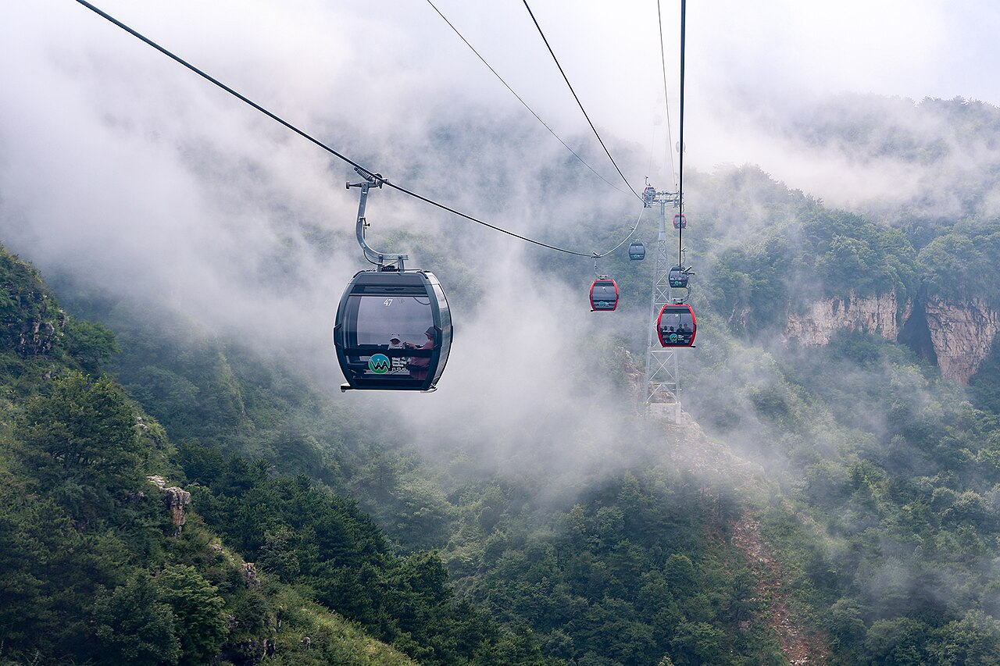
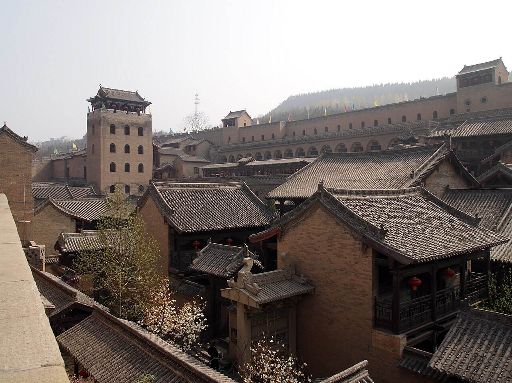
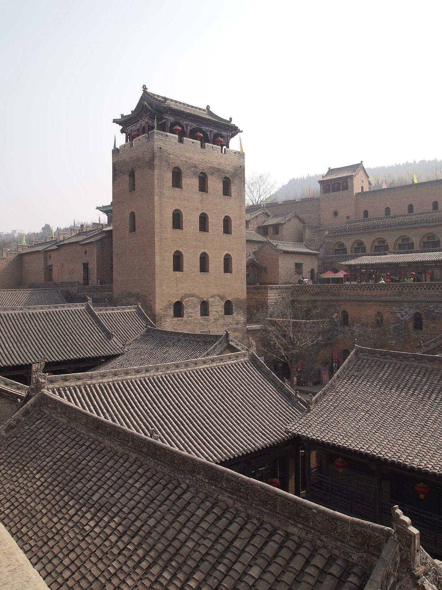

适合什么旅行
古建爱好者、家庭周末游、地方美食体验，以及希望亲近山地自然的游客。
白天走进古堡院落，尝一碗地方风味；夜晚看打铁花划过天空。再把时间留给太行山的峰峦与云海。晋城适合慢慢逛，不必把所有景点挤进一天。
晋城位于山西东南部，南太行山地与沁河流域构成了丰富的自然和人文景观。市区、泽州、高平、阳城、陵川等地各有特色，景点之间距离不近，建议按县域分组安排，避免一天跨越多个方向。
古建爱好者、家庭周末游、地方美食体验，以及希望亲近山地自然的游客。
市区与司徒小镇可安排一段轻松行程；若加入王莽岭或阳城古建，建议另留完整的一天。
先确定景区入口和交通方式，再安排路线；山区天气、道路和接驳情况可能与市区不同。
司徒小镇以民俗街区和夜间演出为主要体验之一。“千年铁魂”等演出将传统打铁花技艺融入舞台呈现。可以把下午留给街区、美食和游览，晚上再根据当日演出安排决定是否观看。
观看时请按现场工作人员指引站在安全区域，不要越过隔离线。演出场次、是否开放及票务规则以当日景区公告为准。
关于高速通行费补贴、免费餐食、停车及其他游客权益：相关活动可能有日期、票种、车辆、收费站和凭证等限制，不能视为长期固定福利。购票前请向景区核实当日有效规则，并保存票据及活动说明。
王莽岭位于陵川县，山势起伏、崖壁层叠，天气合适时可以看到开阔的山地景观。云海并非每天都有，雾、风、降雨也可能影响观景和交通。

从晋城市区出发前，确认景区入口、道路状况、接驳车或索道运行情况及票务包含项目。山区温度和能见度可能与市区明显不同。
遇到强风、雷雨、道路结冰或景区临时管控时，应调整计划。穿防滑鞋，沿开放步道行走，不要靠近未设防护的崖边。
皇城相府位于阳城县北留镇，与陈廷敬及其家族历史相关，院落、城门和防御建筑呈现了明清时期地方家族生活与建筑特色。附近的郭峪古城也可作为同方向的文化游览点，具体开放区域请提前确认。

适合对历史人物、传统院落、城防格局和建筑细节感兴趣的游客。建议预留充足参观时间，不要只安排匆忙打卡。

以下地点分布在不同县区，适合按地理方向组合，不建议在短时间内全部串联。
适合慢逛街巷、观察传统聚落风貌。页面现有图片为示意性老街图片，并非已核实的大阳古镇实景。
阳城县具有代表性的古堡聚落之一，可关注其独特的防御格局和地方建筑材料。出发前确认开放区域。
位于阳城县，以山地森林和河谷自然景观为主，建议单独安排，并核实季节性开放和道路情况。
泽州县的古建参观点，适合对传统庙宇建筑感兴趣的游客。请先确认具体入口和开放安排。
可作为市区周边较轻松的休闲选择。步道、开放区域和活动安排以现场信息为准。
晋城及周边县市有丰富的面食、豆制品和地方小吃。店铺配方和口味差异较大，可按个人口味选择。
下面介绍的是地方饮食线索，不是对具体餐馆的推荐；食材、做法和供应情况会因店铺而异。
以凉粉为主料，配合调味料和配菜炒制，口感软糯、香气浓郁。可询问辣度和配料。
高平地方风味之一，常见做法突出豆腐本身的香味，具体吃法和蘸料因店而异。
阳城传统特色食品之一，通常以猪肝等食材加工制作；点餐前确认具体原料和制作方式。
晋城各县区还有多种面食、蒸食和家常菜。可以少量多样地尝试，避免一次点太多。
抵达晋城，品尝地方小吃；下午前往司徒小镇，按当日安排游览并决定是否观看夜间演出。
喜欢山景可去王莽岭；喜欢古建可安排皇城相府与郭峪古城。两条线路方向不同，不建议匆忙兼顾。
根据住宿位置和交通情况，选择大阳古镇、砥洎城或蟒河等一处，不必为了凑景点而赶路。
晋城属暖温带大陆性季风气候，四季分明。春季气温变化较大，夏季降雨相对集中，秋季通常较适合户外活动，冬季寒冷干燥。山区天气与市区可能不同。
早晚温差和风力变化较明显，建议分层穿衣，山区出行前查看天气和道路状况。
气温较高且降雨增多，户外活动注意补水；遇到雷雨预警应调整登山和自驾安排。
秋季适合古建和城市漫游；冬季注意保暖、防滑，提前确认山区交通及景区开放情况。